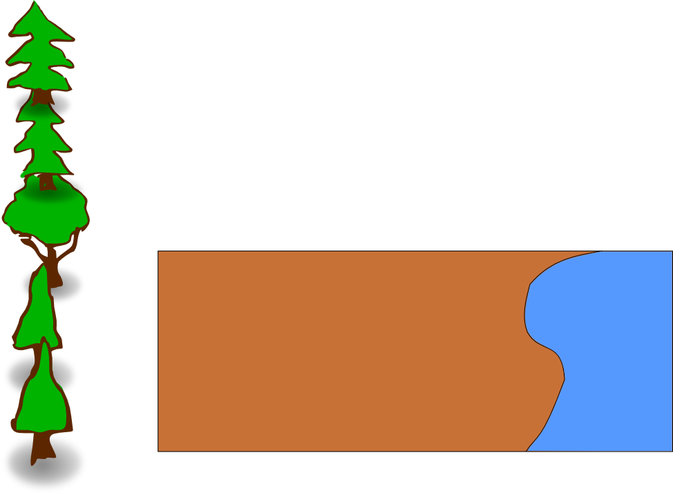

Unidad Dos -- Gráficos
Esta unidad se centra en trabajar con imágenes que, a diferencia de las
fotografías, no fueron creadas con una cámara, sino
directamente en la computadora. Estos tipos de gráficos
(graphics) son
útiles para cosas como folletos, portadas de revistas, logotipos de
empreza, publicidad, o tu tarjeta familiar de Navidad.
Sin embargo, hay una parte muy importante sobre gráficos que este
curso sólo va a tocar un poco: los elementos artísticos. Para
hacer
buenos gráficos, usted debe entender cuáles imágenes son más
agradables a la vista. Aunque esta sección va a ofrecer algunas
indicaciones a lo largo del camino, para entender realmente esto hacen
falta varios
cursos de estudio, años de práctica y un montón de trabajo duro.
En su lugar, este curso se centrará en algunos de los fundamentos de
cómo los gráficos operan, y cómo utilizar algunas herramientas para
llegar a algunos diseños muy básicos.
Si deseas obtener más información sobre el lado más artístico del
diseño gráfico, puede comenzar por la lectura de estos
artículos:
http://es.wikipedia.org/wiki/Composición_(artes_visuales)
http://es.wikipedia.org/wiki/Teoría_del_color
http://es.wikipedia.org/wiki/Estética
http://es.wikipedia.org/wiki/Color
Tema 1 - Gráficos
Vectoralies
Tema 2 - Inkscape
Tema 3 - Proporción y
Espacio
Tema 4 - Luz y Color
Tema 5 - Creación de un Cohete
Tema 6 - Illustrator
Tema 7 - Diagramas
Otras Aplicaciones de Gráficos
Diseño (layout) para publicación
Una vez has creado un gráfico,
necesitas una manera de presentarlo al resto del mundo. Algunas
veces esto se hace en el Internet, pero muchas veces requiere
imprimirse. Hay toda una gama de programas que se enfocan en
hacer que tus gráficos se vean bien cuando sean impresos: estos son los
programas de Diseño para Impresión (Print Layout), Diseño de Página
(Page Layout), y Diseño para Publicación (Publishing Layout).
Estos programas sobrepasan las capacidades de los programas típicos de
procesamiento de texto como Microsoft Word, que por lo general se
enfocan en documentos de tamaño A4 (el tamaño estándar de una hoja de
papel). Estos programas te permiten crear proyectos como
folletos, revistas, libros, volantes, etc.
El programa más profesional en este campo se considera por lo
general que es QuarkXPress, per la compañía Adobe también tiene sus
programas populares PageMaker y InDesign. Para empresas pequeñas y
para uso personal, programas tales como Microsoft Publisher y la
herramienta de código abierto Scribus
son suficientes para un buen trabajo.
Creación de gráficos 3-D
En esta sección sólo hablaremos sobre crear gráficos en dos
dimensiones, aunque en algunos casos hablaremos sobre cómo hacer que la
imagen se vea como si fuera de tres dimensiones. Sin embargo,
todas nuestras creaciones estarán hechas para ser vistas desde una sola
direccion y serán gráficos planos (no sería posible rotarlos de lado o
al revés). Existe también todo un segmento en el campo de
creación de gráficos que envuelve crear objetos capaces de ser
manipulados en tres dimensiones. Cuando trabajas con uno de esos
objetos, es posible rotarlo en la pantalla y verlo desde todos los
ángulos.
Los dos equipos más completos para crear gráficos 3-D son Blender
(código abierto) y Maya (licencia propietaria). Son usados con
frecuencia para crear personajes en películas (como Toy Story o Big Buck Bunny),
juegos de video, o anuncios comerciales. (Vea
más animaciones hechas en Blender.)
En una categoría relacionada sólo un poco, existen programas de
creación de objetos. Estos pueden ser usados para crear objetos
para usos como molinos automáticos o Impresión
3-D,
o pueden ser usados para crear objetos para mundos virtuales como
Second Life o Google Earth. La herramienta más popular usada por
mucha gente para crear estos objetos es Google Sketchup. Sin
embargo, seta es sólo un decendiente simplificado de programas de
Diseño Asistido Computarizado (CAD) como AutoCAD, Solidworks, y BRL CAD.
Animación y Interacción
El uso de computadores para ver gráficos en internet ha permitido
que estos gráficos adopten una propiedad completamente nueva: la
interactividad. Gráficos procesados por computadores son capaces
de desempeñar acciones como respuesta a eventos comenzados por el
usuario (hacer clics, pulsar una tecla, etc.) o simplemente basados en
un conteo de tiempo que comienza cuando el gráfico se accesa. La
forma más común de presentar este contenido interactivo en el internet
ha sido el componente (plugin) de Adobe Flash Player para navegadores
web (el programa Gnash
es una version compatible de código abierto).
Ya que el estándar de Flash está controlado por la corporación
Adobe, han sugido dos intentos recientement, algo concertados, para
reemplazar el Flash y sustituirlo con un formato más abierto y
disponible. El primero hize capacidad animación en los archivos
SVG. Estos proveen algunas de las características básicas que el
estándar Flash soportaba. Más allá de estos intentos, el nuevo
estándar HTML 5, que todos los navegadores importantes van a
implementar o están implementado, tiene numerosas abilidades de
animación. Puede trabajar con archivos SVG en maneras avanzadas,
y tiene tambien lo que se conoce como un elemento "canvas" que crea un
area dentro de la página donde se pueden presentar y manipular todo
tipo de gráficos y animaciones.
Ejercicio de Proporcion y Espacio
Intentemos ese mismo ejemplo ahora. Abajo está el archivo
original, con sólo el trasfondo y ejemplos de árboles. Copia y
pega los árboles en el trasfondo y cambia su tamaño para que
corresponda con la proporción correcta. Comienza en la parte
posterior con los árboles más pequeños, luego continua hacia al frente
(hacia el primer plano), con árboles más y más grande. No olvides
dejar un área sin árboles donde irá nuestro campamento.
Background-Empty.svg

Ejercicio del Dia
Usa Dia para re-crear el ejemplo del organigrama.

Logo Exercise
Creation of your logo - Part 1
In this exercise you will need to create a logo for an imaginary company.
1 - Think of your company. What will the comany do? What will its
product be? It must not an existing company or its product. Write out
your company and its products.
For example: Coca-Cola is NOT acceptable, Cola de Tomas is acceptable
2 - Write out a description of your logo. Include shapes, colors, and other important features.
Creation of your logo - Part 2
Use Inkscape to create your logo based on the description in part 1.
Along with the submission of your logo, include the text you wrote from
part 1, with any updates that are necessary.
Ejercicio Final
Usted va a crear un anuncio para el producto imaginario o empresa que creó en el ejercicio del logotipo. Este anuncio debe ser una página completa (en papel de tamaño A4) que podría entrar en una revista. Debe incluir su logotipo en el ejercicio del logotipo.
Parte 1
Plan de la presentación. ¿Qué hará el anuncio parece? ¿Habrá texto, imágenes, gráficos de otros? ¿Cómo los componentes se espaciadas?
Escriba el plan y lo presentará. Si usted va a utilizar cualquier material externo (imágenes, gráficos, etc) son su atribución.
Parte 2
Crear un diseño con Inkscape. Envíe el SVG y una exportación de PNG que podría ser publicado. Incluir el plan original con los cambios que necesita hacer.
Vocabulary
Gráficos (Graphics) - Imágenes creadas sin el uso de una cámara.
Gráficos vectoriales (Vector Graphics) - Un tipo de gráficos que se
puede almacenar en forma de instrucciones para re-crear la imagen en
vez de en formato raster.
Forma - Un objecto en un gráfico vectorial. Puede ser una forma
regular (rectángulo, elipse, polígono) or una irregular, como una gota
o mancha.
Trazo - Una línea. Los trazos se usan para crear los bordes
exteriores de una forma, pero también se pueden usar por sí solos para
crear líneas, por ejemplo. El trazo puede tener propiedades como
color y grosor.
Relleno - Las propiedades del area contenida dentro del trazo de una forma. La propiedad de relleno más comun es color.
Order-Z - Identifica la posición del eje "Z", el cual determina cuáles objetos están delante o detrás de otros objetos.
Trayecto - Una sequencia de líneas o curvas.
Nodo - Un punto en un trayecto que determina su posición.
Curva Bezier - Un tipo especial de trayecto que permite cambiar la dirección que toma una línea al acercarse hacia un nodo.
Attribution
Mountains, nicubunu, http://www.openclipart.org/detail/9452,
Public Domain
Tree 10, nicubunu, http://www.openclipart.org/detail/9487,
Public Domain
Tree 9, nicubunu, http://www.openclipart.org/detail/9485,
Public Domain
Tree 7, nicubunu, http://www.openclipart.org/detail/9479,
Public Domain
Tree 6, nicubunu, http://www.openclipart.org/detail/9481,
Public Domain
Tree , nicubunu, http://www.openclipart.org/detail/9469,
Public Domain
Fire June holiday's, valessiobrito, http://www.openclipart.org/detail/876,
Public Domain
Tente, spadaddin, http://www.openclipart.org/detail/71005,
Public Domain
Cardboard Box, molumen, http://www.openclipart.org/detail/1509,
Public Domain
Subtractive Color, SharkD et. al., http://commons.wikimedia.org/wiki/File:SubtractiveColor.svg,
Public Domain
Gallery of soverign-state flags, wikipedia community, http://en.wikipedia.org/wiki/Gallery_of_sovereign-state_flags,
CC-BY-SA
Drawing a rocket with Inkscape is not rocket science, Nicu Buculei, http://howto.nicubunu.ro/rocket-inkscape/,
CC-BY-SA
Resources
http://howto.nicubunu.ro/ - Open Source Graphics Tutorials
https://inkscapetutorials.wordpress.com/ - Lots of Inkscape Tutorials
http://kalaalog.com/2007/09/27/how-to-illustrate-palm-tree/
Start of a series of inkscape tutorials -
http://www.youtube.com/watch?v=h-zLZ6ilRRE
Start of a series of illustrator tutorials -
http://www.youtube.com/watch?v=2uAzk_hLRow
Introduccion a Adobe Illustrator CS4 Espacio de trabajo basico
http://www.youtube.com/watch?v=ymowxhyaLNw
TODO:
Create exercise with golden ratio
Create exercise with empty space
Create exercise with light source
Create exercise with color